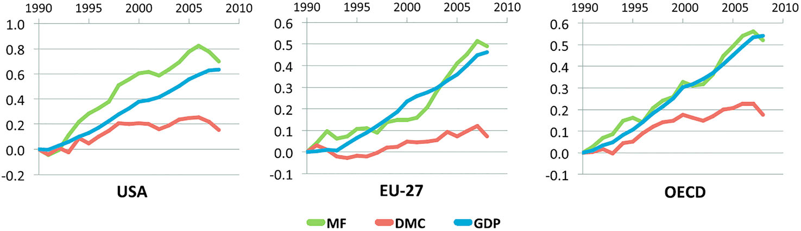
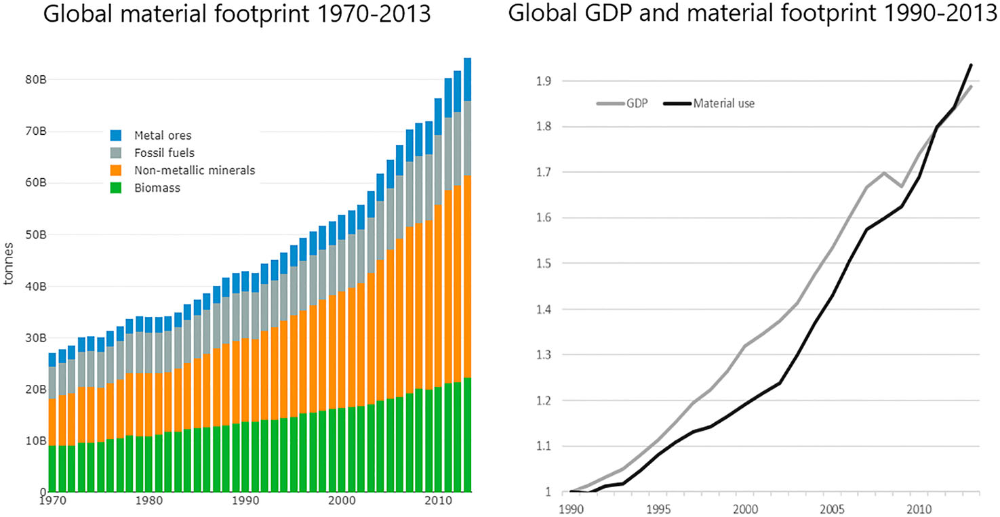
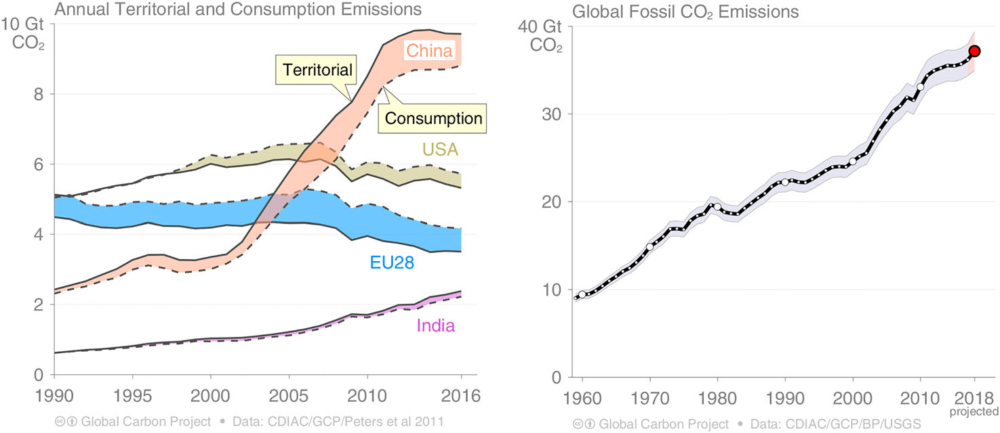
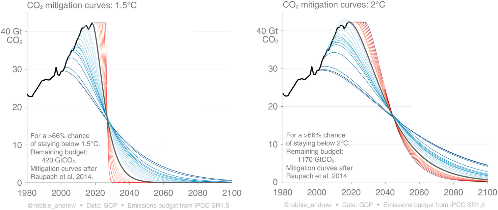

16 Green Growth
What is responsible for climate change is economic growth, not capitalism as such. (Branko Milanovic)
Most people encounter the growth debate, if they encounter it at all, through the idea of “green growth.” This is a vision for our collective future based on the belief that technological advance will drastically reduce the amount of raw materials needed to sustain growth—a process known as dematerialization—and “decouple” growing GDP from its ecological impacts. As proof that this is not only possible but already happening, boosters of the idea point to the transition by rich countries from manufacturing to service-based economies, as well as efficiency gains in energy and in the use of materials. The process that replaced letters with email, and compact discs with digital files, will continue until we live in a spectral economy where little at all is manufactured or transported, save those things that can be pulled from thin air by, one presumes, solar-powered 3-D printers.
The belief that green growth will save us, also known as “ecomodernism” or “ecopragmatism,” has become a trendy article of faith among elites who acknowledge climate change and the dangers of breaching ecological boundaries. In 2017, Barack Obama threw his support behind the idea in an article for Science magazine, maintaining that signs of decoupling in major economies “should put to rest the argument that combatting climate change requires accepting lower growth or a lower standard of living.”
The argument that capitalism can grow itself out of the present crisis may be soothing to those who like the world as it is. It also relies on the kind of accounting tricks and rejection of reality more closely associated with Obama’s successor.
In a growth system, gains in efficiency do not translate to higher wages, greater equality, more leisure, or lower emissions; they are plowed right back into the growth cycle. A classic example of this dynamic is the advent of the chain saw. A person with a chain saw can cut 10 times as many trees in the same time as a person using older methods. Logging companies did not use this invention, however, to shorten the workweek by 90 percent. They used it to cut 10 times more trees than they otherwise would have. “Lashed by the growth imperative, technology is used not to do the same amount of stuff in less time, but rather to do more stuff in the same amount of time,” “In a system where technological innovation is leveraged to expand extraction and production, it makes little sense to hope that yet more technological innovation will somehow magically do the opposite.”
Defenders of growth often take cheap shots at degrowthers by painting them as anti-science, anti-progress, and all around a bit woo-woo. But the targets of these attacks are straw men, and emerge from a dangerously outdated view of the world. For starters, there was never any basis for the materialist view of nature as an all-you-can-eat buffet of inert “resources.” A number of discoveries across the life and physical sciences have revealed the astounding complexity and cooperation of the systems that support life, from the trillions of microbes that process food in our guts, to planet-scale systems that regulate chemical balances in the atmosphere and oceans. In every field—except, notably, economics—the worldview that allows trees to be seen as timber, and timber as a contributor to GDP, has been overtaken by a second scientific revolution. The picture of the world to emerge from this revolution is both more fragile and more interrelated than the equations found in modern economics textbooks can describe.
Zaitchik on Hickels ‘Less is More’ in The New Republic
Many policymakers have responded by pushing for what has come to be called “green growth.” All we need to do, they argue, is invest in more efficient technology and introduce the right incentives, and we’ll be able to keep growing while simultaneously reducing our impact on the natural world, which is already at an unsustainable level. In technical terms, the goal is to achieve “absolute decoupling” of GDP from the total use of natural resources, according to the U.N. definition.
It sounds like an elegant solution to an otherwise catastrophic problem. There’s just one hitch: New evidence suggests that green growth isn’t the panacea everyone has been hoping for. In fact, it isn’t even possible.
Scientists are beginning to realize that there are physical limits to how efficiently we can use resources. Once we reach the limits of efficiency, pursuing any degree of economic growth drives resource use back up. These problems throw the entire concept of green growth into doubt and necessitate some radical rethinking.
Preventing that outcome will require a whole new paradigm. High taxes and technological innovation will help, but they’re not going to be enough. The only realistic shot humanity has at averting ecological collapse is to impose hard caps on resource use. We could also ditch GDP as an indicator of economic success and adopt a more balanced measure like the genuine progress indicator (GPI), which accounts for pollution and natural asset depletion.
16.1 Resource Decoupling
Hickel and Kallis
Misguided Objective
The notion of green growth has emerged as a dominant policy response to climate change and ecological breakdown. Green growth theory asserts that continued economic expansion is compatible with our planet’s ecology, as technological change and substitution will allow us to absolutely decouple GDP growth from resource use and carbon emissions. This claim is now assumed in national and international policy, including in the Sustainable Development Goals. But empirical evidence on resource use and carbon emissions does not support green growth theory. Examining relevant studies on historical trends and model-based projections, we find that: (1) there is no empirical evidence that absolute decoupling from resource use can be achieved on a global scale against a background of continued economic growth, and (2) absolute decoupling from carbon emissions is highly unlikely to be achieved at a rate rapid enough to prevent global warming over 1.5°C or 2°C, even under optimistic policy conditions. We conclude that green growth is likely to be a misguided objective, and that policymakers need to look toward alternative strategies.
Green Growth Theory
As a theory, green growth asserts that continued economic expansion (as measured by Gross Domestic Product, or GDP) is or can be made to be compatible with our planet’s ecology. While this idea has been latent in the rhetoric of sustainable development since the Brundtland Commission and the first Rio Conference, with early formulations taking shape under names like Ecological Modernization or the Environmental Kuznets curve hypothesis, green growth theory renders it as a formal assertion.
Green Growth Policy
Green growth theory is now promoted by leading multilateral organisations and is assumed in national and international policy. It rests on the assumption that absolute decoupling of GDP growth from resource use and carbon emissions is feasible, and at a rate sufficient to prevent dangerous climate change and other dimensions of ecological breakdown.
Definitions
The concept of green growth is ‘new and still somewhat amorphous.’
There are three major institutional proponents of green growth theory at the international level: the OECD, the United Nations Environment Program (UNEP), and the World Bank. Each published flagship reports on green growth around the time of the Rio+ 20 Conference. In 2011, the OECD launched a green growth strategy titled Towards Green Growth. That same year, UNEP published a report titled Toward a Green Economy: Pathways to Sustainable Development and Poverty Eradication. In 2012, the World Bank published Inclusive Green Growth: The Pathway to Sustainable Development. During the Rio + 20 Conference, these institutions joined with the Global Green Growth Institute to create the Green Growth Knowledge Platform as an instrument for advancing green growth strategy around the world. Each of the three organisations offers a different definition of green growth.
The OECD defines it as
‘fostering economic growth and development while ensuring that natural assets continue to provide the resources and environmental services on which our well-being relies’.
The World Bank defines it as
economic growth that is efficient in its use of natural resources, clean in that it minimizes pollution and environ- mental impacts, and resilient in that it accounts for natural hazards and the role of environmental management and natural capital in preventing physical disasters.
UNEP eschews the language of green growth in favour of ‘green economy’, which it defines as one that
simultaneously grows income and improves human well-being ‘while significantly reducing environmental risks and ecological scarcities’.
The World Bank’s definition is the weakest. The World Bank seeks to ‘minimize’ the environmental impact of growth; but one can minimise environmental impact without reducing impact from its present levels, and indeed while still nonetheless increasing overall impact. The OECD is slightly stronger in that it seeks to ‘maintain’ resources and environmental services, but here too there is no demand to reduce impact. The UNEP report offers the strongest definition in that it calls for reducing environmental impact and ecological scarcities, and for ’rebuilding natural capital’.
The three institutions agree however on the mechanism for achieving green growth. The promise is that technological change and substitution will improve the ecological efficiency of the economy, and that governments can speed this process with the right regulations and incentives.
The World Bank does not ask whether policy-driven innovations will suffice to reduce environmental impact. The OECD, for its part, clarifies that green growth is only possible if technology becomes efficient enough to achieve ‘decoupling’ of growth from environmental impact. UNEP takes this a step further, and puts decoupling at the centre of the analysis:
A key concept for framing the challenges we face in making the transition to a more resource efficient economy is decoupling. As global economic growth bumps into planetary boundaries, decoupling the creation of economic value from natural resource use and environmental impacts becomes more urgent.
UNEP offers the clearest – and strongest – policy-oriented definition of green growth, namely, that green growth requires absolute decoupling of GDP from resource use and environ- mental impact.
Absolute Decoupling - fast
This leaves us with the question: Is absolute decoupling possible, and, if so, is it possible at a rate sufficient for returning to and staying within planetary boundaries?
Resource Use DMC
The conventional metric for measuring an economy’s resource use is ‘domestic material consumption’ (DMC), which is the total weight of raw materials (biomass, minerals, metals and fossil fuels) extracted from the domestic territory, plus all physical imports minus all physical exports.
While the mass flows of individual materials are not indicative of their ecological impacts, and while impacts vary as technologies change, at an aggregate level there is a high degree of correlation (0.73) between material throughput and ecological impacts.
Dividing GDP by DMC gives an indication of the ‘resource efficiency’ of an economy.
If GDP grows faster than DMC (relative decoupling), the economy is becoming more resource efficient.
GDP/DMC is used by the European Union to monitor progress toward green growth. It is also the headline metric of the OECD’s annual Green Growth Indicators report. By this metric, it appears that many nations have achieved relative decoupling, with GDP growing at a rate faster than DMC.
European OECD nations have achieved absolute decoupling, growing GDP while reducing DMC. (Note: the OECD’s version of DMC does not include fossil fuels).
DMC Weaknesses
DMC is a problematic indicator, however, as it does not include the material impact involved in the production and transport of imported goods
Material Footprint MF
In a globalised economy, where rich countries have outsourced much of their production to poorer countries, this side of material consumption has been shifted off their balance sheet. If we bring it back in, looking at the total resource impact of consumption by any given nation (what Wiedmann et al refer to as ‘material footprint’, or MF), the picture changes. Wiedmann et al show that while the USA, UK, Japan, the OECD and EU-27 have achieved relative decoupling of GDP from DMC (including fossil fuels), material footprint has been rising at a rate equal to or greater than GDP, suggesting no decoupling at all; indeed, in most cases re-coupling has occurred

On a global scale, resource use has been rising on a steady trajectory. During the twentieth century GDP grew at a faster rate (3 per cent per year) than resource use (2 per cent per year). This represents a relative decoupling or dematerialisation of GDP growth, at a rate of about 1 per cent per year. But this changed in the twenty-first century: the growth rate of global con- sumption increased between 2000 and 2005, averaging 3.7 per cent per year. As this matched the growth rate of GDP, no decoupling was achieved. The growth rate of global consumption accelerated in the twenty-first century, averaging 3.4 per cent per year between 2000 and 2009

A period of modest growth of global material footprint from 1980 to 2002, at 1.78 per cent per year. As this was slower than the rate of GDP growth, some relative decoupling was achieved. However, the final decade from 2002 to 2013 shows an accelera- tion of global material use, at 3.85 per cent per year.
The material intensity of the world economy has been increasing in the twenty-first century, not decreasing. Currently, the world economy is there- fore on a path of re-materialization and far away from any – even relative – decoupling.
In sum: global historical trends show relative decoupling but no evidence of absolute decoupling, and twenty-first century trends show not greater efficiency but rather worse efficiency, with re-coup- ling occurring.
Projections
Productivity gains in today’s linear production system are likely to lead to increased material demand through a combination of economic growth and rebound effects’.
Improving circularity could reduce the ecological impact of material through- put, but only a small fraction of total throughput has circular potential.
Absolute decoupling is not feasible on a global scale in the context of continued economic growth.
For non-substitutable resources such as land, water, raw materials and energy, we argue that whilst efficiency gains may be possible, there are minimum requirements for these resources that are ultimately governed by physical realities: for instance the photosynthetic limit to plant productivity and maximum trophic conversion efficiencies for animal production govern the minimum land required for agricultural output; physiological limits to crop water use efficiency govern minimum agricultural water use, and the upper limits to energy and material efficiencies govern minimum resource throughput required for economic production.
Indefinite Growth Not Possible
Decoupling of GDP growth from resource use, whether relative or absolute, is at best only temporary. Permanent decoupling (absolute or relative) is impossible for essential, non-substitutable resources because the efficiency gains are ultimately governed by phys- ical limits. Growth in GDP ultimately cannot plausibly be decoupled from growth in material and energy use, demonstrating categorically that GDP growth cannot be sustained indefinitely.
Reduced Growth Needed
It is reasonable to expect that green growth could be accomplished at very low GDP growth rates, i.e. less than 1 per cent per year – significantly lower than historical trends and projected pathways.
16.2 Carbon Decoupling
Hickel and Kallis
Unlike with resource use, there is a steady long-term trend toward relative decoupling of GDP from carbon emissions, and we know that absolute reductions in carbon emissions are possible to achieve. When it comes to climate change, however, the objective is not simply to reduce emissions (a matter of flows), but to keep total emissions from exceeding specific carbon budgets (a matter of stocks). For green growth theory, then, the question is not only whether we can achieve absolute decoupling and reduce emissions, but whether we can reduce emissions fast enough to stay within the carbon budgets for 1.5°C or 2°C, as per the Paris Agreement, while still continuing economic growth.

A number of high-income countries have seen declining emissions in the twenty-first century, despite continued economic growth.
On a global level, CO 2 emissions have increased steadily, falling only during periods of economic recession.
Overall, global carbon productivity has been slowing. World Bank data shows that carbon pro- ductivity (CO 2 per 2010 $US GDP) improved steadily from 1960 to 2000, with decarbonisation hap- pening at an average rate of 1.28 per cent per year (relative decoupling). However, from 2000 to 2014 there was no improvement in carbon productivity – in other words, not even relative decou- pling has been achieved in the twenty-first century.
The IPCC’s Fifth Assessment Report (AR5) includes 116 mitigation scenarios that are consistent with Representative Concentration Pathway 2.6 (RCP2.6), which offers the best chances of staying below 2°C. All of these scenarios are green growth scenarios in that they stabilise global temperatures while global GDP continues to rise. Rising GDP is a built-in feature of the Shared Socio-Economic Path- ways (SSPs), which form the basis for the IPCC mitigation scenarios. AR5 warns,however, that these scenarios ‘typically involve temporary overshoot of atmospheric concentrations’ and ‘typically rely on the availability and widespread deployment of bioenergy with carbon capture and storage (BECCS)’.
BECCS
BECCS entails growing large tree plantations to sequester CO 2 from the atmosphere, harvesting the biomass, burning it for energy, capturing the CO 2 emissions at source and storing it underground. Relying on these ‘negative emissions technologies’ allows for a much larger carbon budget (about double the actual size) by assuming that we can suc- cessfully reduce global atmospheric carbon in the second half of the century.
BECCS is highly controversial among climate scientists. It was first proposed by Obersteiner et al. (2001) and Keith (2001) at the turn of the century. IPCC modelling teams began including it in their scenarios from 2005, despite having no firm evidence of its feasibility. With the publication of AR5, BECCS was enshrined as a dominant assumption.
Obersteiner has expressed alarm at the rapid uptake of his idea; he considers BECCS to be what he calls a ‘risk-management strategy’, or a ‘back- stop technology’ in case climate feedback loops turn out to be worse than expected, and says the IPCC has ‘misused’ it by including it in regular scenarios to take pressure off of conventional mitiga- tion pathways (i.e. emissions reductions). While ‘measured use’ of biomass could help mitigate environmental problems, ‘large scale use of cropped biomass will not.’
The ‘allure’ of BECCS is due to the fact that it allows politicians to postpone the need for rapid emissions reductions.
There are a number of con- cerns. First, the viability of power generation with CCS has never been proven to be economically viable or scalable; it would require the construction of 15,000 facilities (Peters 2017). Second, the scale of biomass assumed in the AR5 scenarios would require plantations covering land two to three times the size of India, which raises questions about land availability, competition with food production, carbon neutrality, and biodiversity loss (Smith et al. 2016; Heck et al. 2018). Third, the necessary storage capacity may not exist.
BECCS remains a ‘highly speculative technology’ and relying on it is therefore ‘an unjust and high stakes gamble’.
It is not clear that we can justifiably rely on BECCS, an unproven technology, to underwrite green growth theory. If we accept this point, then we must return to asking whether it is possible to main- tain growth without relying on BECCS to stay within the carbon budgets.
Without BECCS, global emissions need to fall to net zero by 2050 for 1.5°C, or by 2075 for 2°C. 9 This entails reductions of 6.8 per cent per year and 4 per cent per year, respectively.

Theoretically, this can be accomplished with (a) a rapid shift to 100 per cent renewable energy to eliminate emissions from fossil fuel combustion (Jacobson and Delucchi 2011); plus (b) afforestation and soil regeneration to eliminate emissions from land use change; plus (c) a shift to alternative industrial processes to eliminate emissions from the production of cement, steel, and plastic. The question is, can all of this be accomplished quickly enough?
If we assume global GDP continues to grow at 3 per cent per year (the average from 2010 to 2014), then decoupling must occur at a rate of 10.5 per cent per year for 1.5°C, or 7.3 per cent per year for 2°C. If global GDP grows at 2.1 per cent per year, then decoupling must occur at 9.6 per cent per year for 1.5°C, or 6.4 per cent per year for 2°C. All of these targets are beyond what existing empirical models indicate is feasible. Before adopting BECCS assumptions, the IPCC (2000) projected decoupling of 3.3 per cent per year in a global best-case scenario. This fall short of the decoupling rate that must be achieved if the global economy continues to grow at expected rates.
There is one empirical model that feasibly accomplishes emissions reductions consistent with the Paris Agreement, without relying on negative emissions technologies. Published by Grubler et al. (2018), it was included in the IPCC Special Report on 1.5°C (2018) in response to growing critiques of the IPCC’s reliance on BECCS. The scenario, known as ‘Low Energy Demand’ (LED), accomplishes emissions reductions compatible with 1.5°C by reducing global energy demand by 40 per cent by 2050. In addition to decarbonisation and afforestation, the key feature of this scenario is that global material production and consumption declines significantly. Dematerialisation is accomplished by shifting away from private ownership of key commodities (like cars) towards sharing-based models. LED differentiates between the global North and South. Industrial activity declines by 42 per cent in the North and 12 per cent in the South. With efficiency improvements, this translates into industrial energy demand declining by 57 per cent in the North and 23 per cent in the South.
it is logically possible to have increasing GDP and a decreasing physical and energy throughput in an economy … it is a fallacy to move from claims about what is logically possible to claims about what is physically possible and another from what is physically possible to what is empirically actual.
Is Green Growth Theoretically Possible?
This question is often approached in terms of the IPAT equation (Environmental Impact = Popu- lation * Affluence * Technology), which says that the impact of an economy (e.g. tons of C per capita) is equal to the scale of the economy (GDP per capita) times its efficiency (e.g. GDP per tons of carbon). Efficiency is in principle determined by technology and policy and there is no a priori reason why it cannot increase faster than scale, or even as fast as necessary to reduce impact to a sustainable level. Furthermore, insofar as GDP measures what people are willing to pay for things, as opposed to the amount of energy and resources people consume, there is no reason why the economy cannot in theory grow using progressively less energy and resources: peoples’ preferences may shift to goods and services with ever-lower energy and material requirements. One may con- clude then that absolute decoupling should theoretically be possible – and in fact this is precisely the reason that advocates of green growth are not deterred by claims that it has not happened yet and does not seem likely to happen in the future. They attribute this to lack of effort.
As there is a thermodynamically defined maximum of efficiency, indefinite growth will sooner or later lead to increase in resource and energy use. Any absolute reductions due to substitution or efficiency will at best be temporary.
So let us assume that green growth is theoretically possible in the short to medium term. Still, we must ask if there is a fundamental, as opposed to historically contingent reason why it has not hap- pened yet. Is there some underlying reason why throughput and output are so tightly coupled in the empirical record?
It cannot be proven that green growth of value is theoretically possible. It cannot be proven either that green growth is theoretically impossible. As a result, our only reliable guide to the green growth/decoupling question must be empirical. Existing empirical studies demonstrate that green growth is at best highly unlikely.
Conclusion
This review finds that extant empirical evidence does not support the theory of green growth. This is clear in two key registers. (1) Green growth requires that we achieve permanent absolute decou- pling of resource use from GDP. Empirical projections show no absolute decoupling at a global scale, even under highly optimistic conditions. While some models show that absolute decoupling may be achieved in high-income nations under highly optimistic conditions, they indicate that it is not possible to sustain this trajectory in the long term. (2) Green growth also requires that we achieve permanent absolute decoupling of carbon emissions from GDP, and at a rate rapid enough to prevent us from exceeding the carbon budget for 1.5°C or 2°C. While absolute decou- pling is possible at both national and global scales (and indeed has already been achieved in some regions), and while it is technically possible to decouple in line with the carbon budget for 1.5°C or 2°C, empirical projections show that this is unlikely to be achieved, even under highly opti- mistic conditions.
The empirical evidence opens up questions about the legitimacy of World Bank and OECD efforts to promote green growth as a route out of ecological emergency, and suggests that any policy pro- grammes that rely on green growth assumptions – such as the Sustainable Development Goals – need urgently to be revisited.
We will need to scale down aggregate economic activity too.
The objective could be to find ways to decouple prosperity and development from growth.
16.3 Hausfather’s Decoupling
Langridge
New research by Hausfather (2021), published by the Breakthrough Institute last month, now claims to have found evidence of such decoupling, sparking renewed debate among green growth and degrowth advocates. While yet to go through peer review, the research claims that the absolute decoupling of CO2 emissions from economic growth has occurred in a select number of (largely Global North) countries. Between 2005 and 2019, 32 countries managed to decouple their CO2 emissions, both territorial and consumption, from growth in GDP. Several prominent ecomodernists and green growth advocates have declared these findings to be proof that we can grow our way out of the ecological crisis.
But do such claims stand up to scrutiny? There are five reasons to doubt that they do. First, the emissions counted in the research do not provide the complete picture. While they cover both territorial and consumption-based emissions, those from land use changes, international shipping and aviation are not included. These are not trivial figures and, unlike other sectors, they are continuing to increase: international aviation emissions are up 140% since 1990 (Mattioli, 2020). Second, the research only considers emissions from CO2; other greenhouse gases – methane, nitrous oxide, and ozone – are not included. Emissions of methane – a greenhouse gas with 80 times the warming power of CO2 – began rising in 2007 after a seven-year period of stability. Since 2014, the rate of increase has more than doubled, with emissions from livestock production to satisfy the Global North’s demand for meat being the primary cause (Fletcher and Schaefer, 2019).
Third, the research also does not include the use of material resources more broadly, which are on the rise and still tightly coupled with GDP. In fact, the global economy has been rematerializing since the turn of the century, meaning an increase in the material intensity of the growth of GDP (Parrique et al., 2019). This is not likely to abate in the future. A World Bank report in 2017 showed that powering the global economy through renewables will require massive increases in material extraction – including a 2,700% increase in lithium. This is before any economic growth is taken into account (Hickel, 2020). Dittrich et al. (2012) estimated that global resource extraction would total 180 billion tons by 2050. The sustainable annual limit is 50 billion tons (Bringezu, 2015).
Fourth, and relatedly, the research provides no evidence of absolute decoupling - of CO2 or otherwise – yet occurring at the global level. Given that the ecological crisis is a global problem, and the timescales require a halving of greenhouse gas emissions by 2030, with total net zero to be achieved by 2050, this is a major obstacle. Green growth advocates therefore speak of negative-emissions technologies, such as the Bio-energy with Climate Capture and Storage (BECCS) which is present in the majority of IPCC scenarios. Unfortunately, this technology has never been shown to work at scale, and the land requirements total an area two to three times the size of India, the ecological implications of which would be devastating and fall disproportionately on the Global South (Hickel, 2020).
Fifth, the research has also been subject to several methodological critiques, the main one being the use of regression analysis rather than actual emissions figures, painting an overly optimistic impression. While both methods come with their own issues, this demonstrates the importance of waiting for peer review before making any sweeping assertions.
To conclude, any decoupling of emissions from GDP is a welcome and necessary development in the fight against climate breakdown. However, the above arguments strongly suggest that absolute decoupling at the global level, and from environmental pressures more broadly, is not occurring and is unlikely to happen within the timescales available (Parrique et al., 2019; Haberl et al., 2020). Continuing to pursue environmental and development strategies based around aggregate economic expansion is therefore extremely risky. It not only makes it harder - if not impossible - to meet out environmental targets but every day of delay condemns the poor to further periods of unnecessary hardship and suffering. Development strategies should instead focus growth where it is needed – in places where it can help people to satisfy their needs – and adopt degrowth strategies in the rich North, where, in any case, further growth contributes little to increases in wellbeing (Kubiszewski et al., 2013; Jackson, 2017)
Langridge (2021) Can we really grow our way out of the ecological crisis?